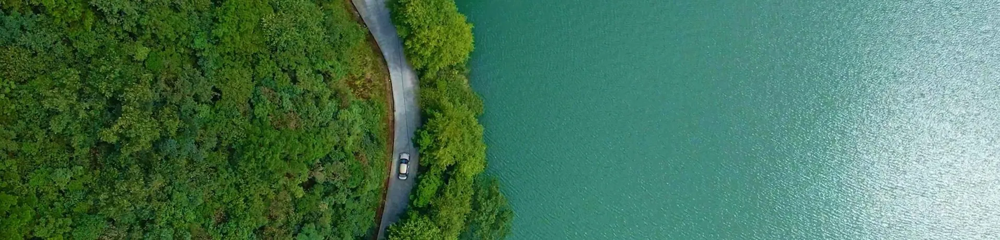

Environment
環境
我們高度重視生產及運營對環境的影響，嚴格遵守適用的法律法規，並持續推動綠色低碳發展及資源高效利用。
- 已建立環境及職業健康安全管理體系，獲得 ISO 14001 及 ISO 45001 認證；危險廢棄物處置率達 100%
- 工業園區內採用太陽能發電，截至 2026 年 6 月 30 日發電量達 181,468.2 千瓦時；碳排放強度持續下降（每百萬元收入 CO₂e 由 2023 年 1.0 噸降至 2025 年 0.3 噸）